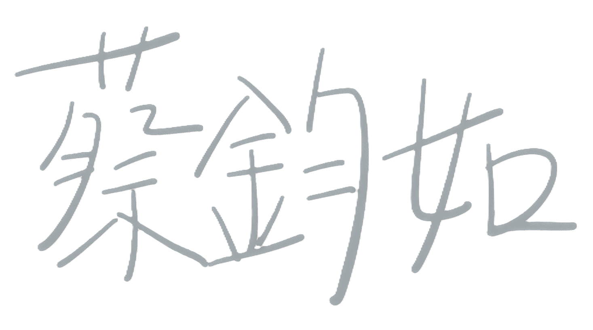

⎙ 我的自傳與履歷
自我介紹
我是蔡鈞如，目前就讀靜宜大學資訊管理學系大學部二年級。在學期間我最感興趣的課程是程式設計和網頁設計。
在學習過程中學習將理論應用到實際問題中，不僅提升了解決問題的邏輯思維，這些經驗還讓我更加認識程式設計的基本概念。除了接觸過多種程式語言外，我還接觸過HTML和CSS等前端開發，嘗試設計一些簡單的網頁。這些經歷讓我更清楚自己在程式設計方面的興趣。
技術技能
- HTML5、CSS3 + RWD 響應式網頁設計
- JavaScript 與 Bootstrap 建構互動元件與網站版型
- Power BI 進行報表製作與視覺化分析
- SQL 增、刪、查、改的基本語法與彙總
- 具備 C 語言基礎，理解程式邏輯與指標概念
- 以 Java 撰寫基本物件導向程式，熟悉建構子與類別等概念
- Figma 設計與製作UI/UX原型，理解基本介面設計與流程規劃
- 接觸過 Kotlin，了解 Android App 開發基礎架構與畫面設計
- 使用 C 語言 於 Arduino IDE 開發實體互動專案，具備硬體感測器控制與程式邏輯設計經驗
為何適合這些工作
我認為自己對程式設計和網頁設計有一定的基礎，並且願意持續學習和提升自己。在過去的學習中，我掌握了基本的程式設計技巧，並且在課堂中完成了一些與程式設計和網頁設計相關的專案。這些經歷讓我更清楚自己對解決問題的興趣，也了解到如何運用程式語言實現具體的功能。雖然還有很多地方需要進步，但我有信心能夠通過不斷的學習和實踐，繼續提升自己的技術。
在未來的職涯中，我希望能結合程式設計和網頁設計的優勢，成為一名全方位的開發者，並以創新與用戶體驗為目標，開發出實用的網站與應用程式。
未來規劃
修習進階課程：希望學習更多前端框架（如React、Vue）與後端技術的知識，增加自己的全端開發能力。
實習與專案經驗：我打算積極尋找校內外實習機會，並參與一些實際專案，我認為在真實的工作環境中學習最能夠提升自己的技術與解決問題能力，透過實戰演練程式設計技能學習團隊合作與專案管理。
我希望通過這些努力能夠不斷積累經驗、提升自己的專業能力，為未來的職涯奠定基礎。
